l1_data <- rep(c("cog", "lel", "psy"), c(41, 52, 55))
# expected frequencies
exp <- rep(length(l1_data) / length(unique(l1_data)),
length(unique(l1_data))) # there are 3 unique values
names(exp) <- c("cog", "lel", "psy") # vectors can be named!
# see the observed distribution
table(l1_data)
l1_data
cog lel psy
41 52 55
# and the expected one
exp
cog lel psy
49.33333 49.33333 49.33333 par(mfrow = 1:2)
barplot(table(l1_data), ylim = c(0, 60),
main = "Observed", col = colors[3])
barplot(exp, ylim = c(0, 60), main = "Expected")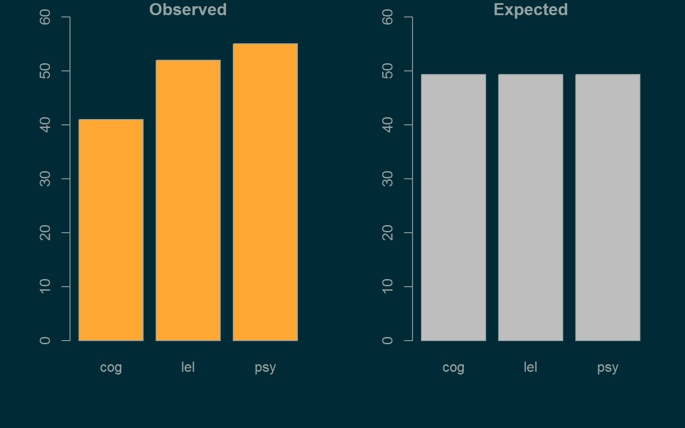
par(mfrow = c(1, 1))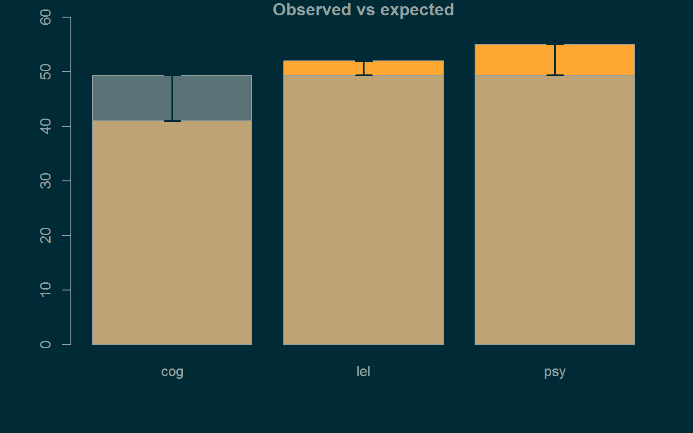
(diffs <- table(l1_data) - exp)
l1_data
cog lel psy
-8.333333 2.666667 5.666667
(squares <- diffs^2)
l1_data
cog lel psy
69.444444 7.111111 32.111111
(chi <- sum(squares/exp))
[1] 2.202703# take 100,000 samples of 148 draws from
# a uniform distribution of the 3 programmes
pop <- replicate(10^5, sample(names(exp), 148, replace = T))
# define a function that calculates the chi^2 stat
chi_fun <- function(obser, expect) sum((table(obser) - expect)^2/expect)
# apply the function to each column of pop
chi_dist <- apply(pop, 2, function(x) chi_fun(x, exp))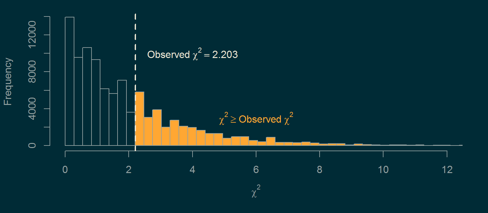
# empirical p-value
sum(chi_dist >= chi)/length(chi_dist)
[1] 0.34077hist(chi_dist, breaks = seq(0, 22, by = .275), main = "",
xlab = expression(chi^2), xlim = c(0, 12), freq = F)
x <- seq(0, 12, length.out = 500)
lines(x, dchisq(x, 2), col = colors[3], lwd = 2)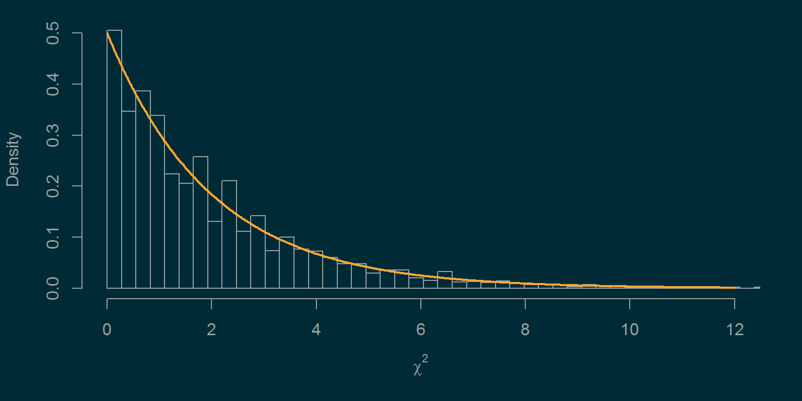
# get probability that chi^2 >= observed value
pchisq(chi, 2, lower.tail = F)
[1] 0.3324216
# compare with empirical p-value
sum(chi_dist >= chi)/length(chi_dist)
[1] 0.34077Rchisq.test(table(l1_data))
Chi-squared test for given probabilities
data: table(l1_data)
X-squared = 2.2027, df = 2, p-value = 0.3324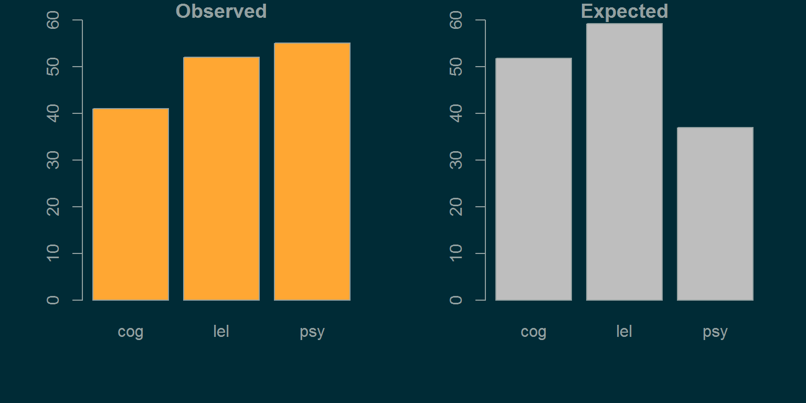
chisq.test(table(l1_data), p = c(.35, .4, .25)) # p < .05
Chi-squared test for given probabilities
data: table(l1_data)
X-squared = 11.884, df = 2, p-value = 0.002627set.seed(1234)
l2_data <- sample(names(exp), 115, replace = T, prob = c(.33, .35, .32))
# create a data frame with lecturer and programme variables
df <- data.frame(lecturer = rep(c("Martin", "Milan"), c(148, 115)),
programme = c(l1_data, l2_data))
# contingency table
(obs <- xtabs(~ lecturer + programme, df))
programme
lecturer cog lel psy
Martin 41 52 55
Milan 30 60 25programme we see that 56.27% of the sample attended Martin’s lecture and 43.73% attended Milan’s (AKA marginal proportions)
programme alone, the percentages of CogSci, LEL, and Psych students at the two lectures were 27%, 42.59%, and 30.42%, respectively# marginal proportions
(prop_lec <- prop.table(table(df$lecturer)))
Martin Milan
0.5627376 0.4372624
(prop_prog <- prop.table(table(df$programme)))
cog lel psy
0.2699620 0.4258555 0.3041825
# outer product gives us what we want
(cell_prop <- prop_lec %o% prop_prog)
cog lel psy
Martin 0.1519178 0.2396449 0.1711749
Milan 0.1180442 0.1862106 0.1330076(exp <- cell_prop * nrow(df)) # expected cell counts
cog lel psy
Martin 39.95437 63.02662 45.01901
Milan 31.04563 48.97338 34.98099(sum((obs - exp)^2/exp)) # chi^2-statistic
[1] 9.53509
chisq.test(df$programme, df$lecturer)
Pearson's Chi-squared test
data: df$programme and df$lecturer
X-squared = 9.5351, df = 2, p-value = 0.008501# is this matrix
cormat
[,1] [,2] [,3] [,4]
[1,] 1.000 0.194 0.042 0.138
[2,] -0.072 1.000 -0.024 0.263
[3,] 0.102 0.001 1.000 -0.006
[4,] 0.170 -0.058 0.030 1.000
# the same as this?
identity
[,1] [,2] [,3] [,4]
[1,] 1 0 0 0
[2,] 0 1 0 0
[3,] 0 0 1 0
[4,] 0 0 0 1 Ashima Shiraishi
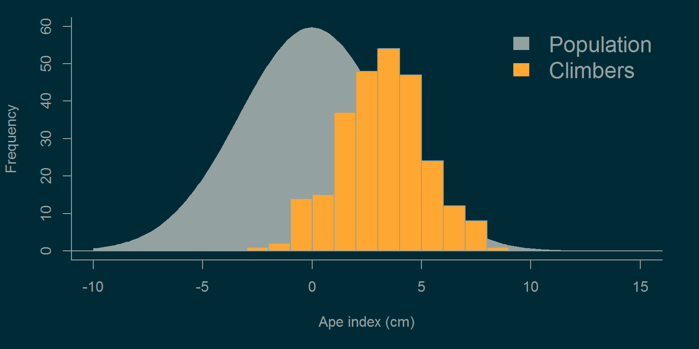
n <- 253; mu <- 0; sigma <- 3.34
# for 100,000 samples get sample mean - mu
diff <- replicate(10^5, mean(rnorm(n, mu, sigma)) - mu)
hist(diff, breaks = 100, xlab = expression(bar(x)-mu),
main = expression(Sampling~distribution~under~H[0]))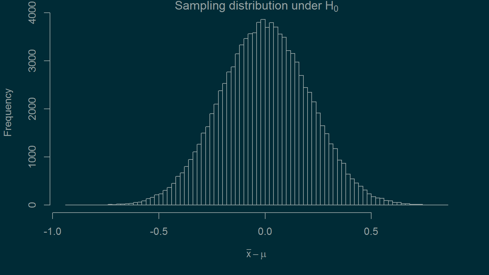
# close enough!
sd(diff)
[1] 0.2101372
(se <- sigma/sqrt(n))
[1] 0.209984diff_scale <- diff/se
hist(diff_scale, breaks = 100, xlab = expression(frac(bar(x)-mu, SE)),
main = expression(Sampling~distribution~under~H[0]))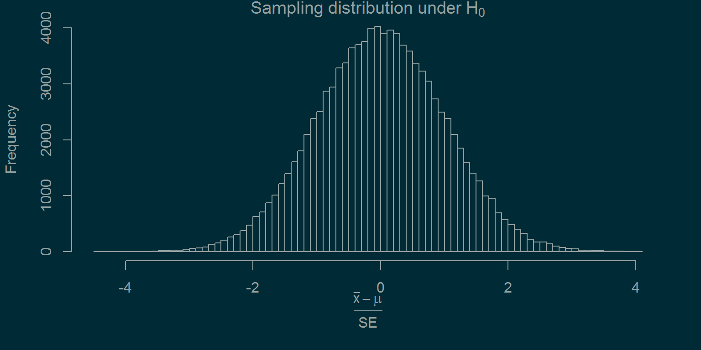
(z <- (mean(climb) - mu)/se)
[1] 15.41326
# empirical 2-tailed p-value
sum(abs(diff_scale) >= z)/length(diff_scale)
[1] 0
# 2-tailed p-value using std normal distribution
pnorm(z, 0, 1, lower.tail = F) * 2
[1] 1.333109e-53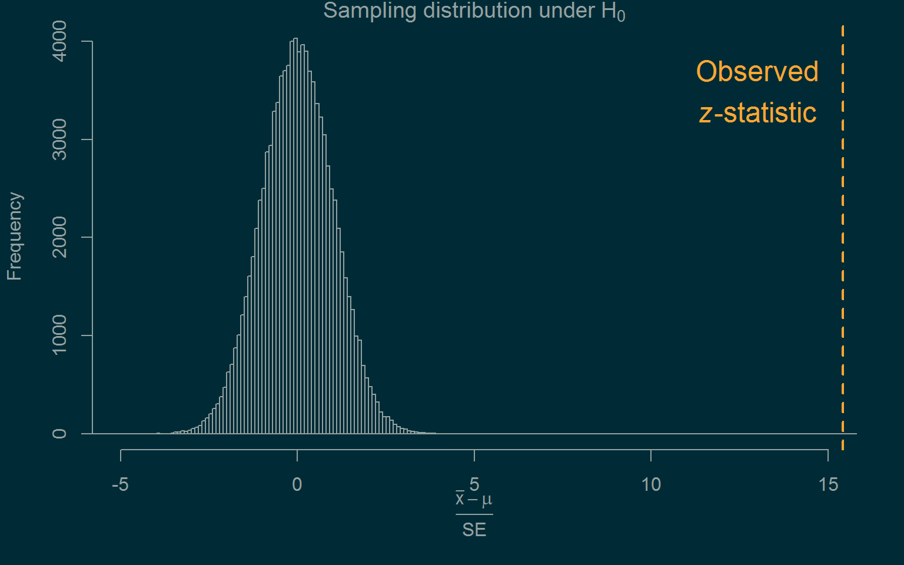
# get 300 elite swimmers
swim <- rnorm(300, 3.32, 1.5)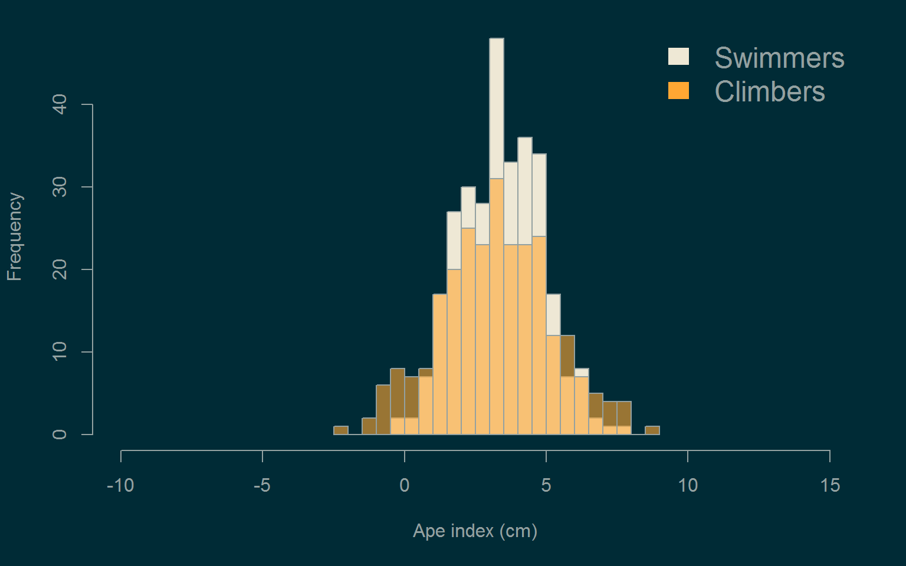
var_climb <- 1.94^2
var_swim <- 1.5^2
(z <- (mean(climb) - mean(swim))/
sqrt(var_climb/length(climb) + var_swim/length(swim)))
[1] -1.079301
pnorm(abs(z), lower.tail = F) * 2
[1] 0.2804534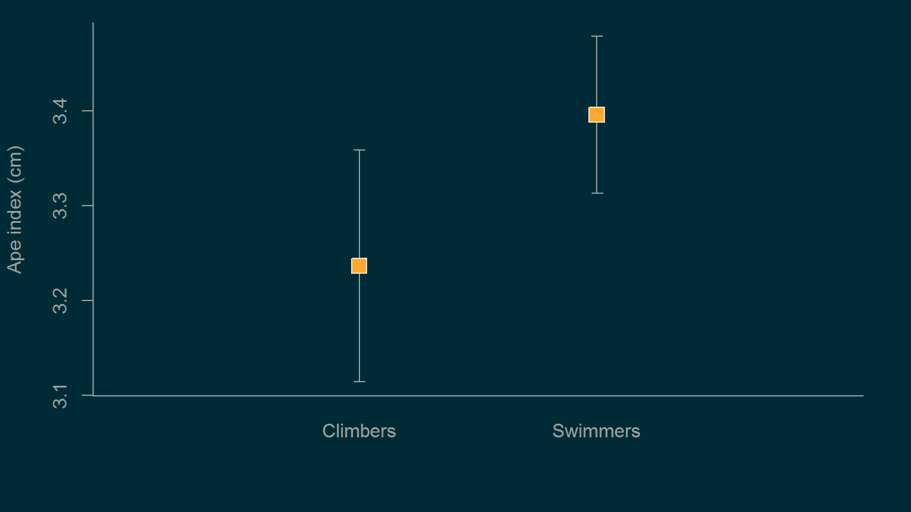
We found no difference between the mean AI of elite climbers and elite swimmers, \(z = -1.08,\ p = .28\).
n <- 263
# SE estimates from population of climbers with mu = 3 and sigma = 1.94
se_hat <- replicate(10^4, sd(rnorm(n, 3, 1.94))/sqrt(n))
mean(se_hat) # mean of the sampling dist of SE hat
[1] 0.1195214
1.94/sqrt(n) # compare to actual SE
[1] 0.1196255
hist(se_hat, breaks = 50,
xlab = expression(widehat(italic(SE))), main = "")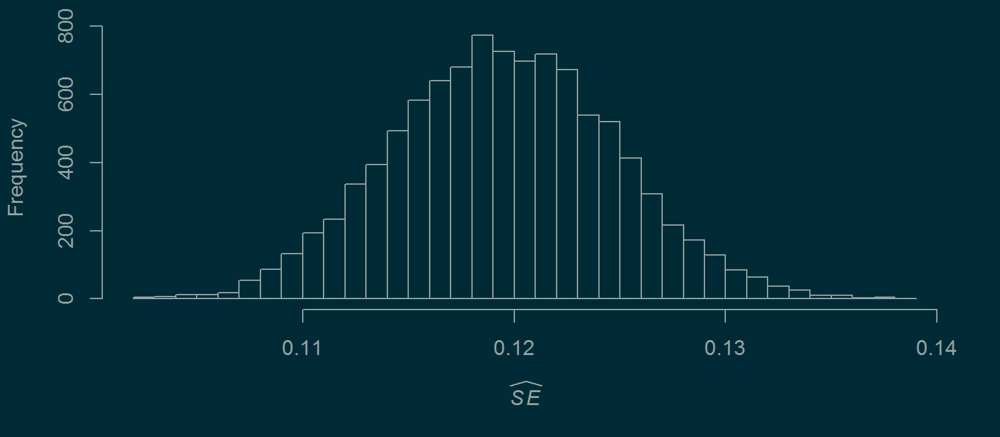
se_hat <- sqrt(var(climb)/ n) # estimated SE
t <- mean(climb)/se_hat # t-statistic
pt(t, n - 1, lower.tail = F) * 2 # 2-tailed p-value
[1] 5.16621e-76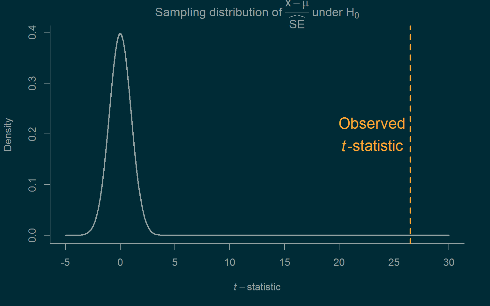
t.test(climb) # one-sample t-test (mu = 0 by default)
One Sample t-test
data: climb
t = 26.473, df = 262, p-value < 2.2e-16
alternative hypothesis: true mean is not equal to 0
95 percent confidence interval:
2.995807 3.477270
sample estimates:
mean of x
3.236538 A one-sample t-test showed that the mean ape index of elite climbers is significantly different from zero,
R calculates Welch’s t-test
t.test(swim, climb)
Welch Two Sample t-test
data: swim and climb
t = 1.0795, df = 470.65, p-value = 0.2809
alternative hypothesis: true difference in means is not equal to 0
95 percent confidence interval:
-0.1307397 0.4495286
sample estimates:
mean of x mean of y
3.395933 3.236538 Welch’s t-test revealed no difference between the mean ape index of elite climbers and elite swimmers,
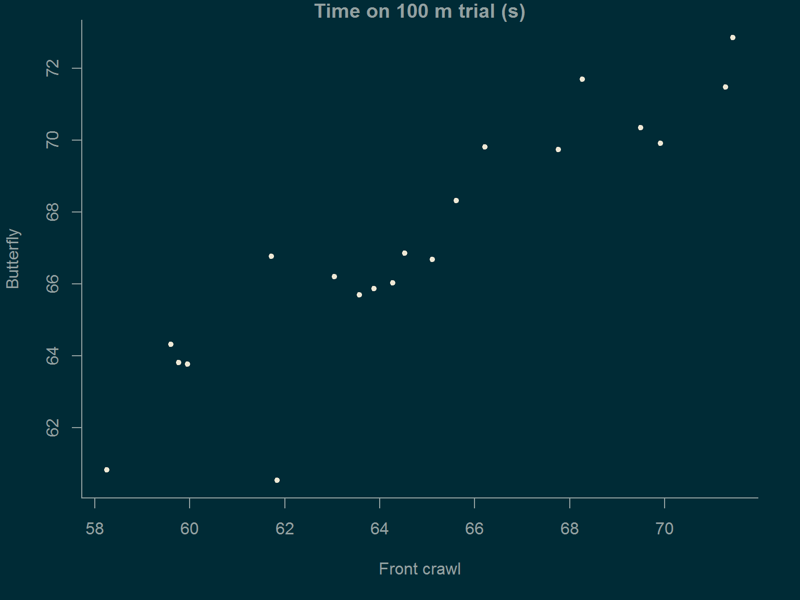
t.test(b_fly, crawl)
Welch Two Sample t-test
data: b_fly and crawl
t = 1.9557, df = 37.247, p-value = 0.05803
alternative hypothesis: true difference in means is not equal to 0
95 percent confidence interval:
-0.0823304 4.6833950
sample estimates:
mean of x mean of y
67.07590 64.77537 # numerator
mean(b_fly - crawl) # paired
[1] 2.300532
mean(b_fly) - mean(crawl) # independent
[1] 2.300532
# denominator
sqrt(var(b_fly)/20 + var(crawl)/20) # SE Welch
[1] 1.176293
sqrt(var(b_fly - crawl)/20) # SE paired
[1] 0.3594874t.test(b_fly, crawl, paired = T)
Paired t-test
data: b_fly and crawl
t = 6.3995, df = 19, p-value = 3.885e-06
alternative hypothesis: true difference in means is not equal to 0
95 percent confidence interval:
1.548117 3.052948
sample estimates:
mean of the differences
2.300532 A paired-sample t-test showed that athletes swam faster when using the front crawl compared to the butterfly stroke over 100 m,
All follow the same procedure
# create 21 unrelated random normal variables
df_type1 <- data.frame(replicate(21, rnorm(40, 0, 1)))
# compare var 1 and each one of the 20 others with a t-test
results <- lapply(df_type1[-1, ], function(x) t.test(x, df_type1[[1]]))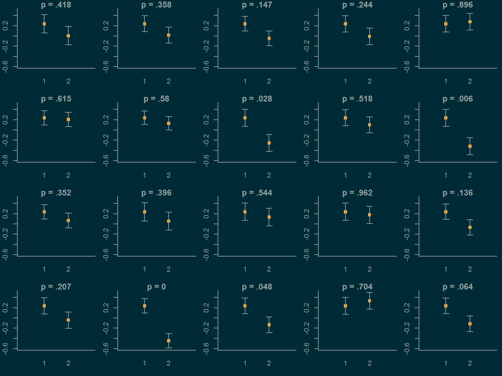
| \(H_0\) is true | \(H_0\) is false | |
|---|---|---|
| \(p \geq .05\) | Correct retention |
Type II error |
| \(p < .05\) | Type I error |
Statistical power |
df <- data.frame(group = rep(0:1, c(length(climb), length(swim))),
ape_index = c(climb, swim))
t.test(ape_index ~ group, df)
Welch Two Sample t-test
data: ape_index by group
t = -1.0795, df = 470.65, p-value = 0.2809
alternative hypothesis: true difference in means is not equal to 0
95 percent confidence interval:
-0.4495286 0.1307397
sample estimates:
mean in group 0 mean in group 1
3.236538 3.395933 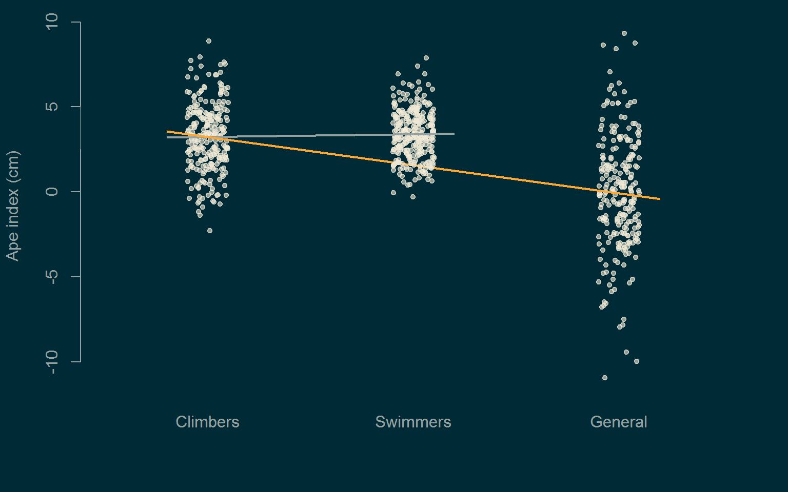
The process
# observed statistic
obs_stat <- mean(df$ape_index[df$group == 0]) -
mean(df$ape_index[df$group == 1])
# bootstrap
boot_dist <- c()
df2 <- df
for (i in 1:1000) {
# RANDOMISE group by resampling its values
df2$group <- sample(df$group, replace = T)
boot_dist <- c( # add value to boot_dist
boot_dist,
# calculate the statistic on the bootstrapped sample
mean(df2$ape_index[df2$group == 0]) -
mean(df2$ape_index[df2$group == 1]))
}sum(abs(boot_dist) >= abs(obs_stat)) / length(boot_dist)
[1] 0.255
t.test(ape_index ~ group, df)$p.value # compare to t-test
[1] 0.2808978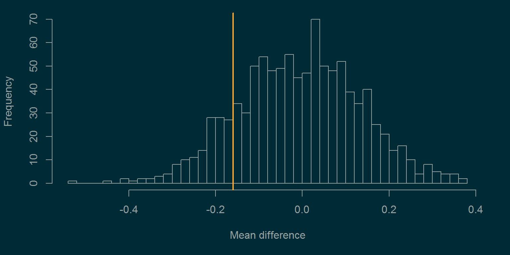
group but take sample of whole rows of df# bootstrap for CI
boot_dist <- c()
for (i in 1:1000) {
# resample df - ENTIRE ROWS
df2 <- df[sample(nrow(df), replace = T), ]
boot_dist <- c( # add value to boot_dist
boot_dist,
# calculate the statistic on the bootstrapped sample
mean(df2$ape_index[df2$group == 0]) -
mean(df2$ape_index[df2$group == 1]))
}hist(boot_dist, breaks = 50, main = "", xlab = "Mean difference")
abline(v = obs_stat, col = colors[3], lwd = 2)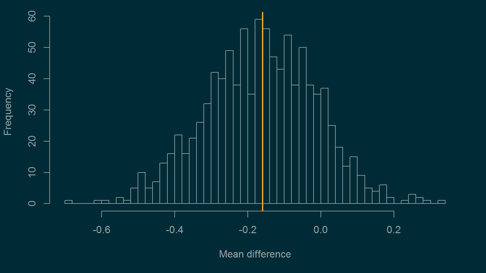
# middle 95% of boot_dist = 95% CI
(cutoffs <- quantile(boot_dist, c(.025, .975), na.rm = T))
2.5% 97.5%
-0.4629747 0.1197745
# compare to CI from t-test
t.test(ape_index ~ group, df[df$group != 2, ])$conf.int
[1] -0.4495286 0.1307397
attr(,"conf.level")
[1] 0.95plot(ape_index ~ jitter(group, amount = .1), df, pch = 20, type = "p",
col = paste0(colors[2], "55"), xlim = c(-.5, 1.5), bty = "n",
xaxt = "n", xlab = "", ylab = "Ape index (cm)")
abline(lm(ape_index ~ group, df), lwd = 2, col = colors[3])
axis(1, at = 0:1, c("Climbers", "Swimmers"), tick = F, cex = 1.5)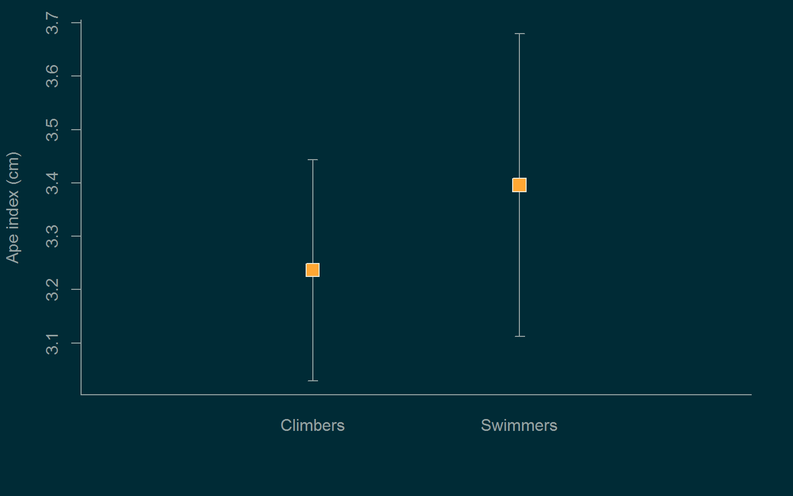
t.test(ape_index ~ group, df, var.equal = T) # Student's t not Welch's
Two Sample t-test
data: ape_index by group
t = -1.102, df = 561, p-value = 0.2709
alternative hypothesis: true difference in means is not equal to 0
95 percent confidence interval:
-0.4434890 0.1247001
sample estimates:
mean in group 0 mean in group 1
3.236538 3.395933 # linear model
m1 <- lm(ape_index ~ group, df)
round(coef(summary(m1)),3) # summary of some of the results
Estimate Std. Error t value Pr(>|t|)
(Intercept) 3.237 0.106 30.655 0.000
group 0.159 0.145 1.102 0.271df_gen <- data.frame(group = 2, ape_index = rnorm(250, 0, 3.34))
df <- rbind(df, df_gen) group ape_index D_1 D_2
1 0 3.3222633 0 0
2 0 3.3758678 0 0
3 0 1.5576753 0 0
390 1 3.0198380 1 0
391 1 2.6463791 1 0
392 1 4.9876503 1 0
650 2 3.9600569 0 1
651 2 -0.0129005 0 1
652 2 4.5026731 0 1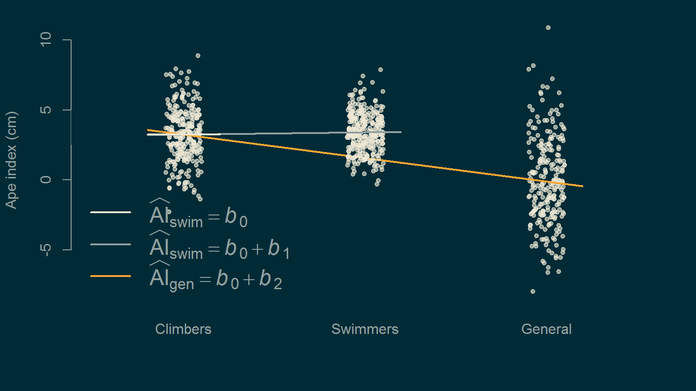
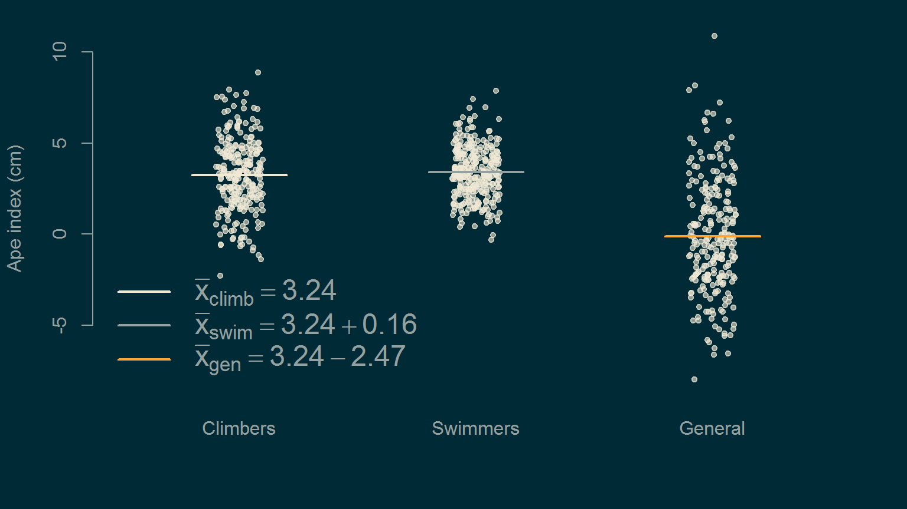
R does it by default when the predictor is a factor